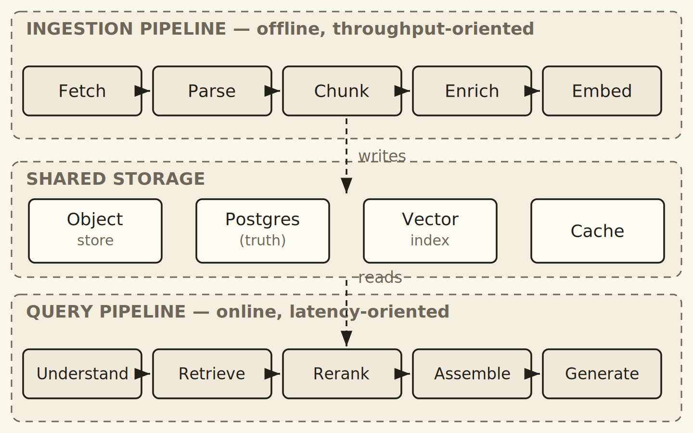
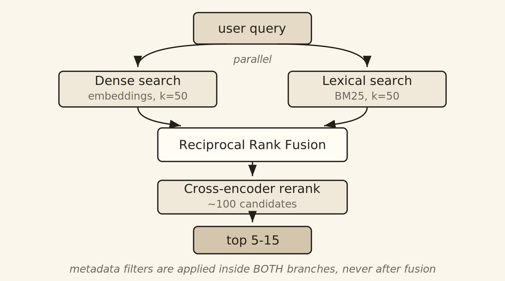
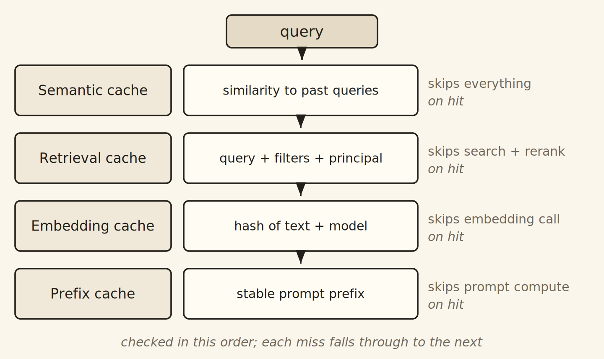
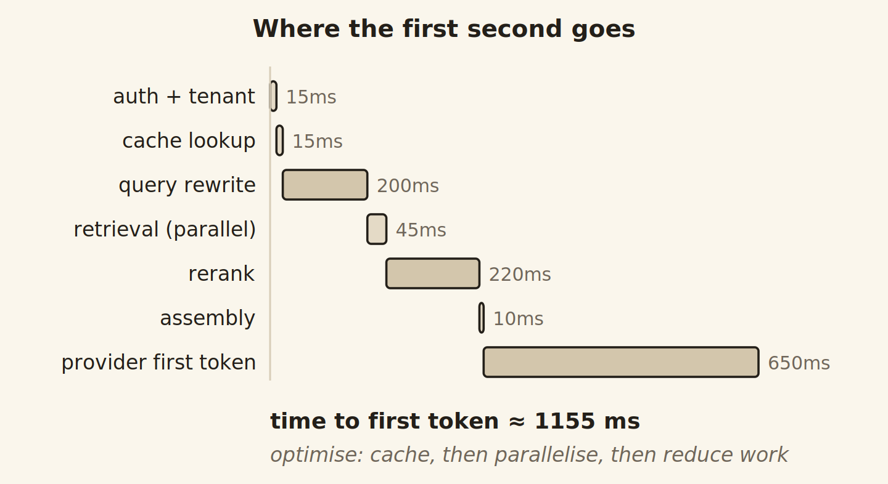

Stop shipping RAG demos.
Start shipping systems.
The distance between a weekend RAG prototype and something a business can depend on is not about models. It is about architecture. This book is the construction manual — vector databases, hybrid retrieval, reranking, caching, multi-tenancy, cost, and evaluation, with the specific decision criteria and the failure modes that repeat across every team.
One-time purchase. Typeset PDF, DRM-free. Lifetime updates.
Enterprise-Scale Retrieval Systems
The demo takes an afternoon. Production takes a year — usually for the wrong reasons.
Almost every team hits the same three walls, and almost every team spends months attacking the wrong one.
Tuning prompts to fix retrieval
The quality of a RAG system is dominated by retrieval, not generation. If the right paragraph never entered the context window, no model can rescue the answer — and a stronger model just hallucinates around the gap more fluently.
Architecture that collapses at scale
Four million documents instead of four. Three hundred users behind a tenant boundary. Legal asking where the data physically lives. Finance asking why the bill tripled. The prototype shape does not survive any of these.
No way to tell if changes helped
Without separate measurement of retrieval and generation, every change is a guess. Teams optimise on the last complaint they received and have no idea whether the system is getting better or worse.
Six parts, front to back, from embeddings to on-call runbooks.
Every chapter follows the same rhythm: plain-language explanation, the concrete decision with the numbers that matter, then the mistakes engineers actually make.
Foundations
- When RAG is the wrong tool
- Anatomy of a production system
- Embeddings and migration design
The Retrieval Layer
- Chunking playbooks by content type
- Choosing a vector database
- HNSW, IVF and quantization tuning
- Hybrid search, RRF, reranking
- Query rewriting and routing
- Metadata and multi-tenancy
The Generation Layer
- Context assembly and token budgets
- Grounding and abstention
- Model tiering and the inference gateway
Backend Architecture
- Service topology and idempotency
- Ingestion and the reality of PDFs
- Choosing databases — what goes where
- Four cache layers that pay for themselves
- Queues, streaming, concurrency
Running It for Real
- Security, prompt injection, tenancy
- Cost engineering and attribution
- Evaluation harnesses and golden sets
- Observability and deployment
Blueprints
- Five complete reference architectures
- The 72-item mistake catalogue
- A 16-week implementation roadmap
- Decision tables and sizing formulas
Diagrams drawn for engineers, not for slide decks.
Thirteen original figures, each earning its place by showing something prose can't: system shape, decision boundaries, and where the time and money actually go.




All 27 chapters.
Tap any chapter to see what it covers.
A properly typeset book, no DRM, yours forever.
Typeset PDF — 186 pages
Not an exported Word file. Cream-paper design, running headers, page numbers, a linked contents list, a list of figures, and 263 nested PDF bookmarks so the sidebar navigation actually works. Set in TeX Gyre Pagella at 6×9 inches — reads comfortably on a tablet and prints cleanly.
Production-Ready RAG & Backend Architecture
Everything above, in one download. One payment, lifetime updates — when the book is revised, you get the new edition free.
Before you buy.
Who is this for?
Backend, platform, and ML engineers who have built or are about to build a RAG system that other people depend on. You should be comfortable with APIs, databases, and deployment. You do not need a machine-learning background — the book treats models as components, not research.
Is this tied to a specific framework or vendor?
No. It compares the realistic options — pgvector, Qdrant, Weaviate, Milvus, Pinecone, Elasticsearch, LanceDB, Vespa — and gives you the criteria for choosing between them. The architectural ideas outlive any particular library version, which is deliberate: libraries in this field change every quarter.
Is it full of code?
There is code where code clarifies a concept, and prose where prose is clearer. This is an architecture book, not a tutorial. You will find schemas, configuration examples, sizing formulas, and decision tables rather than a repository to clone.
I already run RAG in production. Will I learn anything?
The parts most experienced teams get value from are the 72-item mistake catalogue, the evaluation chapter, the four-layer caching model, filtered-search behaviour in vector databases, and the cost-attribution material. If your system has no reranker or no golden set, start there.
What exactly do I receive?
A download link for the typeset PDF, immediately after checkout. No DRM, no account required, no subscription. If you want it on a Kindle, email the file to your Send-to-Kindle address and Amazon converts it for you.
Do I get future editions?
Yes. Revised editions are free to existing buyers. If you opt in at checkout, we'll email you the new download link at the address you used; otherwise just write to us and we'll send it over.
What if it isn't useful to me?
Email within 30 days and you get a full refund, no questions asked. Keep the files. Full details in our refund policy.